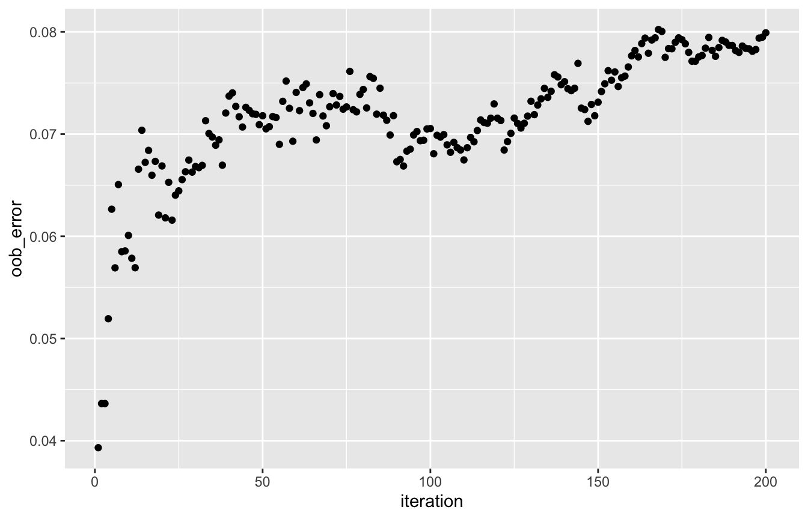
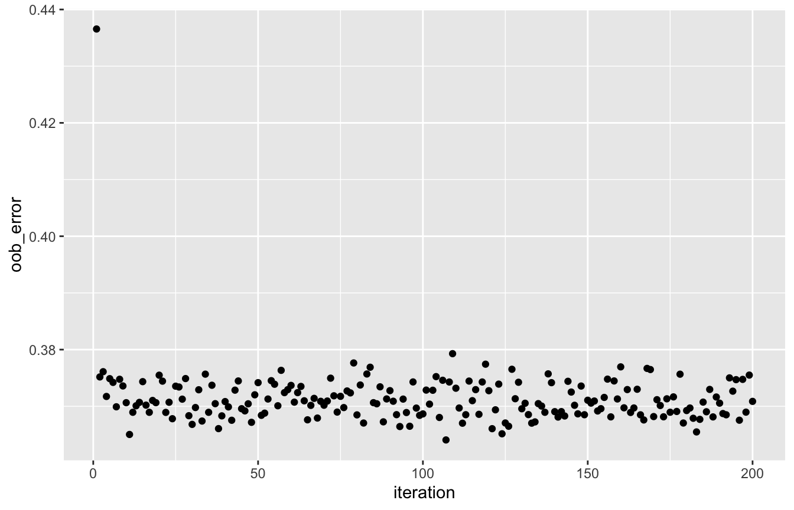
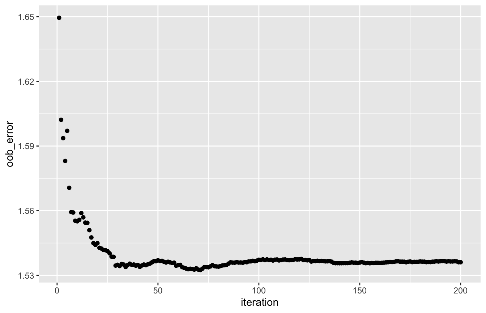

vignettes/distRforest.Rmd
distRforest.Rmdlibrary(distRforest)
The use of distRforest will be illustrated with the ausprivauto0405 dataset from the package CASdatasets:
Third party insurance is a compulsory insurance for vehicle owners in Australia. It insures vehicle owners against injury caused to other drivers, passengers or pedestrians, as a result of an accident. The
ausprivauto0405dataset is based on one-year vehicle insurance policies taken out in 2004 or 2005. There are 67856 policies, of which 4624 had at least one claim.
The ausprivauto0405 dataset is a data.frame with 67856 observations and 9 variables (Exposure, VehValue, VehAge, VehBody, Gender, DrivAge, ClaimOcc, ClaimNb, ClaimAmount):
str(ausprivauto0405) #> 'data.frame': 67856 obs. of 9 variables: #> $ Exposure : num 0.304 0.649 0.569 0.318 0.649 ... #> $ VehValue : num 1.06 1.03 3.26 4.14 0.72 2.01 1.6 1.47 0.52 0.38 ... #> $ VehAge : Factor w/ 4 levels "old cars","oldest cars",..: 1 3 3 3 2 1 1 3 2 2 ... #> $ VehBody : Factor w/ 13 levels "Bus","Convertible",..: 5 5 13 11 5 4 8 5 5 5 ... #> $ Gender : Factor w/ 2 levels "Female","Male": 1 1 1 1 1 2 2 2 1 1 ... #> $ DrivAge : Factor w/ 6 levels "old people","older work. people",..: 5 2 5 5 5 2 2 3 4 2 ... #> $ ClaimOcc : int 0 0 0 0 0 0 0 0 0 0 ... #> $ ClaimNb : int 0 0 0 0 0 0 0 0 0 0 ... #> $ ClaimAmount: num 0 0 0 0 0 0 0 0 0 0 ...
Variables of interest are introduced when needed. For a full description see ?CASdatasets::ausprivauto0405.
This section introduces the functions to build a random forest and make predictions from it. Afterwards, examples of binary classification, Poisson regression and Gamma regression illustrate how to use them.
To build a random forest with the distRforest package, call the function rforest(formula, data, method, weights = NULL, parms = NULL, control = NULL, ncand, ntrees, subsample = 1, track_oob = FALSE, keep_data = FALSE, red_mem = FALSE) with the following arguments:
formula: object of the class formula with a symbolic description for the model to be fitted of the form response ~ var1 + var2 + var3 without interactions. Please refrain from applying transformation functions to the response, but add the transformed variable to the data beforehand. Two exceptions exist, see method = 'poisson' and method = 'exp' below.data: data frame containing the training data observations.method: string specifying the type of forest to build. Options are:
'class': classification forest.'anova': standard regression forest with a squared error loss.'poisson': poisson regression forest for count data. The left-hand-side of formula can be specified as cbind(observation_time, number_of_events) to include time exposures.'gamma': gamma regression forest for strictly positive long-tailed data.'lognormal': lognormal regression forest for strictly positive long-tailed data.'exp': exponential scaling for survival data. The left-hand-side of formula is specified as Surv(observation_time, event_indicator) to include time exposures.weights: optional name of the variable in data to use as case weights. Either as a string or simply the variable name should work.parms: optional parameters for the splitting function, see ?distRforest::rpart for the details and allowed options.control: list of options that control the fitting details of the individual rpart trees. Use distRforest::rpart.control to set this up.ncand: integer specifying the number of randomly chosen variable candidates to consider at each node to find the optimal split.ntrees: integer specifying the number of trees in the ensemble.subsample: numeric in the range [0,1]. Each tree in the ensemble is built on randomly sampled data of size subsample * nrow(data).track_oob: boolean to indicate whether the out-of-bag errors should be tracked (TRUE) or not (FALSE). This option is not implemented for method = 'exp' or multi-class classification. For the other methods, the following errors are tracked. All the errors are evaluated in a weighted version if weights are supplied.
class: Matthews correlation coefficient for binary classification.anova: mean squared error.poisson: Poisson deviance.gamma: gamma deviance.lognormal: mean squared error.keep_data: boolean to indicate whether the data should be saved with the fit. It is not advised to set this to TRUE for large data sets.red_mem: boolean whether to reduce the memory footprint of the rpart trees by eliminating non-essential elements from the fits. It is adviced to set this to TRUE for large values of ntrees.The function returns an object of class rforest which is a list containing the following elements:
trees: list of length equal to ntrees, containing the individual rpart trees in the forest.oob_error: numeric vector of length equal to ntrees, containing the OOB error at each iteration (if track_oob = TRUE).data: the training data (if keep_data = TRUE).Predictions from a random forest can be retrieved via the generic predict function, which will call predict.rforest(object, newdata) with arguments:
object: fitted model object from the class rforest.newdata: data frame containing the observations to predict. This argument can only be missing when the random forest in object is trained with keep_data = TRUE. In that case, the original training data will be used to generate predictions.The function returns a numeric vector containing a prediction for each observation. A majority vote among individual trees is taken for a binary classification forest, while the predictions of the individual trees are averaged for normal, poisson, gamma and lognormal regression forests.
Assume that you want to model which type of policyholder in the portfolio is more likely to file a claim. The variable ClaimOcc in the ausprivauto0405 data has the value 1 for policyholders who filed a claim and 0 otherwise. An insurance claim is an unlikely event, as most policyholders do not file a claim:
ausprivauto0405$ClaimOcc %>% table %>% prop.table #> . #> 0 1 #> 0.93185569 0.06814431
It is important that your binary classification response is a numeric or factor with the value 0/1 for the negative/positive class to make sure that everything runs smoothly!
Let’s build a binary classification forest for claim occurrence on a (naively) balanced dataset:
# Balance the data ausprivauto0405_balanced <- rbind(ausprivauto0405[ausprivauto0405$ClaimOcc == 1, ], ausprivauto0405[ausprivauto0405$ClaimOcc == 0, ][1:5000, ]) # Build the random forest set.seed(54321) rf_class <- rforest(formula = ClaimOcc ~ VehValue + VehAge + VehBody + Gender + DrivAge, data = ausprivauto0405_balanced, method = 'class', control = rpart.control(minsplit = 20, cp = 0, xval = 0, maxdepth = 5), ncand = 3, ntrees = 200, subsample = 0.5, track_oob = TRUE, keep_data = TRUE, red_mem = TRUE)
The fit is of the class rforest, which is a list containing the individual trees, the oob_error and the data.
class(rf_class) #> [1] "rforest" "list" names(rf_class) #> [1] "trees" "oob_error" "data" rf_class[['trees']][[1]] #> n= 4812 #> #> node), split, n, loss, yval, (yprob) #> * denotes terminal node #> #> 1) root 4812 2334 1 #> 2) VehValue< 1.255 1600 695 1 #> 4) VehValue>=1.195 125 36 1 * #> 5) VehValue< 1.195 1475 659 1 #> 10) DrivAge=old people,oldest people 399 151 1 #> 20) VehValue< 1.135 365 133 1 * #> 21) VehValue>=1.135 34 16 2 #> 42) DrivAge=oldest people 17 6 1 * #> 43) DrivAge=old people 17 5 2 * #> 11) DrivAge=older work. people,working people,young people,youngest people 1076 508 1 * #> 3) VehValue>=1.255 3212 1573 2 #> 6) DrivAge=old people,older work. people,oldest people,working people,young people 2902 1439 1 #> 12) VehBody=Convertible,Coupe,Hardtop,Truck 187 72 1 #> 24) VehAge=oldest cars 49 13 1 * #> 25) VehAge=old cars,young cars,youngest cars 138 59 1 #> 50) DrivAge=old people,older work. people,oldest people,young people 109 40 1 * #> 51) DrivAge=working people 29 10 2 * #> 13) VehBody=Bus,Hatchback,Minibus,Motorized caravan,Panel van,Roadster,Sedan,Station wagon,Utility 2715 1348 2 #> 26) VehValue>=1.365 2447 1210 1 #> 52) VehValue< 2.0945 1293 602 1 * #> 53) VehValue>=2.0945 1154 546 2 * #> 27) VehValue< 1.365 268 111 2 * #> 7) DrivAge=youngest people 310 110 2 #> 14) VehValue>=3.415 32 12 1 * #> 15) VehValue< 3.415 278 90 2 *
The OOB error evolution (track_oob = TRUE in rforest) shows an increasing trend in Matthews correlation coefficient, which means that the classification is improving over the iterations:
oob_df <- data.frame('iteration' = seq_len(length(rf_class[['oob_error']])), 'oob_error' = rf_class[['oob_error']]) ggplot(oob_df, aes(x = iteration, y = oob_error)) + geom_point()

Sidenote: Matthews correlation coefficient is chosen because this measure takes into account all four elements of the confusion matrix. Measures like accuracy, precision, recall or the F1 score ignore at least one of them.
Predictions from the random forest can be compared to the true values to assess performance. A reasonable amount of observations are classified falsely, but this is likely driven by the limited number of iterations and variables involved to model claim occurrence. Note that there is no need to specify newdata in predict as keep_data = TRUE in rforest. If keep_data = FALSE then newdata = ausprivauto0405_balanced is needed.
pred_df <- data.frame('true' = ausprivauto0405_balanced$ClaimOcc, 'pred' = predict(rf_class)) sprintf('True positives: %i', sum(pred_df$true == 1 & pred_df$pred == 1)) #> [1] "True positives: 2054" sprintf('False positives: %i', sum(pred_df$true == 0 & pred_df$pred == 1)) #> [1] "False positives: 1644" sprintf('True negatives: %i', sum(pred_df$true == 0 & pred_df$pred == 0)) #> [1] "True negatives: 3356" sprintf('False negatives: %i', sum(pred_df$true == 1 & pred_df$pred == 0)) #> [1] "False negatives: 2570"
Although most policyholders do not file a claim in the portfolio, some of them file more than one claim. The variable ClaimNb in the ausprivauto0405 data contains the number of claims filed by a specific policyholder. The variable Exposure contains the fraction of the year that a policyholder was covered by the policy and therefore exposed to the risk of filing a claim. This information should be taken into account as filing a claim during one year or one month of exposure represents a different risk.
ausprivauto0405$ClaimNb %>% table %>% prop.table #> . #> 0 1 2 3 4 #> 9.318557e-01 6.385581e-02 3.993751e-03 2.652676e-04 2.947418e-05 ausprivauto0405$Exposure %>% quantile(probs = seq(0, 1, 0.2)) #> 0% 20% 40% 60% 80% 100% #> 0.002737851 0.175222450 0.347707050 0.550308008 0.772073922 0.999315537
Let’s build a Poisson regression forest which takes the exposure into account via cbind in the formula:
# Build the random forest set.seed(54321) rf_poiss <- rforest(formula = cbind(Exposure, ClaimNb) ~ VehValue + VehAge + VehBody + Gender + DrivAge, data = ausprivauto0405, method = 'poisson', parms = list('shrink' = 10000000), control = rpart.control(minsplit = 20, cp = 0, xval = 0, maxdepth = 5), ncand = 3, ntrees = 200, subsample = 0.5, track_oob = TRUE, keep_data = TRUE, red_mem = TRUE)
The fit is of the class rforest, which is a list containing the individual trees, the oob_error and the data.
class(rf_poiss) #> [1] "rforest" "list" names(rf_poiss) #> [1] "trees" "oob_error" "data" rf_poiss[['trees']][[1]] #> n= 33928 #> #> node), split, n, deviance, yval #> * denotes terminal node #> #> 1) root 33928 1.279984e+04 1.560523e-01 #> 2) VehValue< 1.315 13430 4.734168e+03 1.332482e-01 #> 4) VehBody=Convertible,Minibus,Motorized caravan,Utility 832 1.340727e+02 5.185884e-02 #> 8) DrivAge=older work. people 182 2.000000e-14 1.318592e-16 * #> 9) DrivAge=old people,oldest people,working people,young people,youngest people 650 1.252595e+02 6.539531e-02 #> 18) VehBody=Convertible,Minibus,Motorized caravan 93 2.000000e-14 2.562439e-16 * #> 19) VehBody=Utility 557 1.197784e+02 7.554209e-02 #> 38) DrivAge=working people,young people 329 5.520418e+01 4.904660e-02 * #> 39) DrivAge=old people,oldest people,youngest people 228 6.153674e+01 1.103002e-01 * #> 5) VehBody=Bus,Coupe,Hardtop,Hatchback,Panel van,Sedan,Station wagon,Truck 12598 4.575197e+03 1.383151e-01 #> 10) DrivAge=old people,oldest people 3467 1.086653e+03 1.081414e-01 #> 20) VehBody=Coupe,Hardtop,Hatchback,Panel van,Sedan,Station wagon 3375 1.036962e+03 1.035525e-01 #> 40) VehAge=old cars,oldest cars 3067 8.980670e+02 9.590917e-02 * #> 41) VehAge=young cars,youngest cars 308 1.314579e+02 1.773696e-01 * #> 21) VehBody=Bus,Truck 92 4.101172e+01 2.848879e-01 #> 42) VehValue< 0.96 54 1.239096e+01 8.673712e-02 * #> 43) VehValue>=0.96 38 2.116840e+01 5.245584e-01 * #> 11) DrivAge=older work. people,working people,young people,youngest people 9131 3.472489e+03 1.502146e-01 #> 22) VehBody=Hardtop,Panel van,Station wagon,Truck 1573 5.313250e+02 1.231814e-01 #> 44) DrivAge=older work. people,working people,youngest people 1185 3.857044e+02 1.148979e-01 * #> 45) DrivAge=young people 388 1.442614e+02 1.512880e-01 * #> 23) VehBody=Bus,Coupe,Hatchback,Sedan 7558 2.936459e+03 1.561038e-01 #> 46) VehValue< 0.995 4808 1.760499e+03 1.420909e-01 * #> 47) VehValue>=0.995 2750 1.168747e+03 1.797086e-01 * #> 3) VehValue>=1.315 20498 8.030652e+03 1.708299e-01 #> 6) VehBody=Bus,Convertible,Roadster 66 2.000000e-14 3.301247e-16 * #> 7) VehBody=Coupe,Hardtop,Hatchback,Minibus,Motorized caravan,Panel van,Sedan,Station wagon,Truck,Utility 20432 8.020286e+03 1.713680e-01 #> 14) DrivAge=old people,older work. people,oldest people,working people 14820 5.505612e+03 1.562594e-01 #> 28) DrivAge=old people,oldest people 5010 1.717314e+03 1.364118e-01 #> 56) VehValue< 2.935 4072 1.306061e+03 1.228986e-01 * #> 57) VehValue>=2.935 938 3.983710e+02 1.955371e-01 * #> 29) DrivAge=older work. people,working people 9810 3.778820e+03 1.665797e-01 #> 58) VehBody=Hatchback,Minibus,Panel van,Sedan,Station wagon,Truck,Utility 9381 3.544578e+03 1.610321e-01 * #> 59) VehBody=Coupe,Hardtop,Motorized caravan 429 2.188568e+02 2.862575e-01 * #> 15) DrivAge=young people,youngest people 5612 2.480701e+03 2.133463e-01 #> 30) VehValue>=5.8 48 2.000000e-14 4.563343e-16 * #> 31) VehValue< 5.8 5564 2.471310e+03 2.151991e-01 #> 62) VehValue< 2.825 4202 1.820430e+03 2.009332e-01 * #> 63) VehValue>=2.825 1362 6.437423e+02 2.597354e-01 *
The OOB error evolution (track_oob = TRUE in rforest) shows a decreasing trend in the Poisson deviance, which means that the predictions for the claim numbers are improving over the iterations:
oob_df <- data.frame('iteration' = seq_len(length(rf_poiss[['oob_error']])), 'oob_error' = rf_poiss[['oob_error']]) ggplot(oob_df, aes(x = iteration, y = oob_error)) + geom_point()

Predictions from the random forest can be compared to the true values to assess performance. Note that predictions from a Poisson forest are given on a scale of full time exposure (i.e., setting Exposure = 1 in our case), so you need to multiply predictions with observed Exposure values. Policyholders are split in 5 groups based on their predicted values, going from low to high risk, and the mean of the observed number of claims is calculated per group. The increasing trend shows that the Poisson forest is able to model the risk properly:
pred_df <- data.frame('true' = ausprivauto0405$ClaimNb, 'pred' = predict(rf_poiss) * ausprivauto0405$Exposure) split_df <- pred_df %>% split(cut(pred_df$pred, breaks = quantile(pred_df$pred, probs = seq(0, 1, 0.2)), labels = c('lowest risk', 'low risk', 'medium risk', 'high risk', 'highest risk'))) lapply(split_df, function(df_sub) mean(df_sub$true)) #> $`lowest risk` #> [1] 0.02203227 #> #> $`low risk` #> [1] 0.04111709 #> #> $`medium risk` #> [1] 0.06845479 #> #> $`high risk` #> [1] 0.0946872 #> #> $`highest risk` #> [1] 0.1374991
Besides estimating how frequent a policyholder will file a claim, it is also important to get an idea of the actual severity of the claims in money terms. The variable ClaimAmount in the ausprivauto0405 data contains the sum of claim payments over all claims filed by a specific policyholder. To approximate the individual claim amounts, a new variable ClaimAvg is defined for the average claim payment, but only for those policyholders actually filing a claim. These claim amounts are clearly long-tailed, which calls for appropriate statistical assumptions:
ausprivauto0405_claims <- ausprivauto0405[ausprivauto0405$ClaimOcc == 1, ] ausprivauto0405_claims$ClaimAvg <- with(ausprivauto0405_claims, ClaimAmount / ClaimNb) ausprivauto0405_claims$ClaimAvg %>% quantile(probs = seq(0, 1, 0.2)) #> 0% 20% 40% 60% 80% 100% #> 200.000 331.196 474.120 1047.107 2531.574 55922.130
Let’s build a gamma regression forest for the average claim amount and the number of claims as case weights:
# Build the random forest set.seed(54321) rf_gamma <- rforest(formula = ClaimAvg ~ VehValue + VehAge + VehBody + Gender + DrivAge, data = ausprivauto0405_claims, weights = ClaimNb, method = 'gamma', control = rpart.control(minsplit = 20, cp = 0, xval = 0, maxdepth = 5), ncand = 3, ntrees = 200, subsample = 0.5, track_oob = TRUE, keep_data = TRUE, red_mem = TRUE)
The fit is of the class rforest, which is a list containing the individual trees, the oob_error and the data.
class(rf_gamma) #> [1] "rforest" "list" names(rf_gamma) #> [1] "trees" "oob_error" "data" rf_gamma[['trees']][[1]] #> n= 2312 #> #> node), split, n, deviance, yval #> * denotes terminal node #> #> 1) root 2312 3984.090000 1914.7440 #> 2) VehValue< 4.775 2267 3787.457000 1861.5260 #> 4) VehBody=Bus,Convertible,Motorized caravan,Roadster,Sedan,Station wagon 1342 2025.679000 1654.4600 #> 8) Gender=Female 748 1047.747000 1438.5220 #> 16) VehValue>=1.145 573 728.398000 1264.5970 #> 32) VehAge=youngest cars 121 105.963200 819.6848 * #> 33) VehAge=old cars,oldest cars,young cars 452 596.883000 1385.0180 * #> 17) VehValue< 1.145 175 286.254100 2004.4670 #> 34) DrivAge=old people,oldest people,working people,youngest people 87 123.167500 1622.2780 * #> 35) DrivAge=older work. people,young people 88 156.535300 2359.3570 * #> 9) Gender=Male 594 947.536300 1922.7970 #> 18) VehBody=Bus,Motorized caravan 15 6.425651 695.5565 * #> 19) VehBody=Sedan,Station wagon 579 928.054600 1955.9130 #> 38) VehValue>=2.185 192 220.938300 1429.2740 * #> 39) VehValue< 2.185 387 682.129500 2211.7800 * #> 5) VehBody=Coupe,Hardtop,Hatchback,Minibus,Panel van,Truck,Utility 925 1718.411000 2167.7990 #> 10) DrivAge=old people,older work. people,working people,young people 700 1229.436000 2002.5170 #> 20) VehAge=young cars 184 287.987100 1703.9210 #> 40) VehValue>=2.84 21 7.486495 524.7348 * #> 41) VehValue< 2.84 163 258.929700 1848.7330 * #> 21) VehAge=old cars,oldest cars,youngest cars 516 935.240300 2108.2920 #> 42) VehBody=Coupe,Hardtop,Hatchback,Utility 439 786.531600 1997.9910 * #> 43) VehBody=Minibus,Panel van,Truck 77 141.297400 2745.2810 * #> 11) DrivAge=oldest people,youngest people 225 473.438200 2658.9620 #> 22) VehBody=Coupe,Hatchback,Panel van,Utility 203 396.436500 2367.6670 #> 44) VehValue< 1.605 140 223.484200 1756.7350 * #> 45) VehValue>=1.605 63 145.627500 3631.9570 * #> 23) VehBody=Hardtop,Truck 22 59.939320 5134.9700 #> 46) VehAge=oldest cars,youngest cars 7 5.312453 1203.6770 * #> 47) VehAge=old cars,young cars 15 43.758960 6583.3410 * #> 3) VehValue>=4.775 45 144.483700 4556.0940 #> 6) VehAge=oldest cars,youngest cars 31 54.020370 1346.9800 #> 12) DrivAge=older work. people,oldest people,working people,young people 23 12.690010 706.2741 #> 24) Gender=Female 9 4.113463 544.1127 * #> 25) Gender=Male 14 7.528009 817.7600 * #> 13) DrivAge=old people,youngest people 8 21.788170 3509.3610 * #> 7) VehAge=old cars,young cars 14 33.596730 12578.8800 *
The OOB error evolution (track_oob = TRUE in rforest) shows a decreasing trend in the gamma deviance, which means that the predictions for the claim amounts are improving over the iterations:
oob_df <- data.frame('iteration' = seq_len(length(rf_gamma[['oob_error']])), 'oob_error' = rf_gamma[['oob_error']]) ggplot(oob_df, aes(x = iteration, y = oob_error)) + geom_point()

Predictions from the random forest can be compared to the true values to assess performance. Note that the predictions are being made for the average claim amount, so you need to multiply predictions with observed ClaimNb values to get the aggregate claim cost prediction. Policyholders are split in 5 groups based on their predicted values, going from low to high risk, and the mean of the observed claim amounts is calculated per group. The increasing trend shows that the gamma forest is able to model the risk properly:
pred_df <- data.frame('true' = ausprivauto0405_claims$ClaimAmount, 'pred' = predict(rf_gamma) * ausprivauto0405_claims$ClaimNb) split_df <- pred_df %>% split(cut(pred_df$pred, breaks = quantile(pred_df$pred, probs = seq(0, 1, 0.2)), labels = c('lowest risk', 'low risk', 'medium risk', 'high risk', 'highest risk'))) lapply(split_df, function(df_sub) mean(df_sub$true)) #> $`lowest risk` #> [1] 1137.374 #> #> $`low risk` #> [1] 1515.216 #> #> $`medium risk` #> [1] 1783.012 #> #> $`high risk` #> [1] 2248.87 #> #> $`highest risk` #> [1] 3389.096
The distRforest package allows for an easy calculation of variable importance scores for an rforest object. The function importance_rforest takes one argument, namely the fitted rforest object. The result is a data frame with one row per variable and four columns:
variable: name of the variable.importance: average importance score, taken over all the individual trees.scale_sum: scaled scores which sum to one.scale_max: scaled scores such that the maximum value is equal to one.Assessing the importance of each variable in the three forests built before shows a rather uniform ranking:
rf_class %>% importance_rforest #> variable importance scale_sum scale_max #> 1 VehValue 33.780268 0.38838995 1.00000000 #> 2 DrivAge 22.801008 0.26215548 0.67498008 #> 3 VehBody 19.022700 0.21871424 0.56313052 #> 4 VehAge 9.741263 0.11200055 0.28837140 #> 5 Gender 1.629895 0.01873978 0.04824991 rf_poiss %>% importance_rforest #> variable importance scale_sum scale_max #> 1 VehValue 100.271035 0.37553292 1.00000000 #> 2 VehBody 67.334582 0.25218003 0.67152576 #> 3 DrivAge 62.665775 0.23469451 0.62496388 #> 4 VehAge 28.575436 0.10702011 0.28498196 #> 5 Gender 8.163141 0.03057242 0.08141076 rf_gamma %>% importance_rforest #> variable importance scale_sum scale_max #> 1 VehValue 181.66455 0.39426950 1.0000000 #> 2 VehBody 107.60177 0.23352986 0.5923102 #> 3 DrivAge 88.50472 0.19208323 0.4871876 #> 4 VehAge 57.00526 0.12371943 0.3137941 #> 5 Gender 25.98607 0.05639798 0.1430442